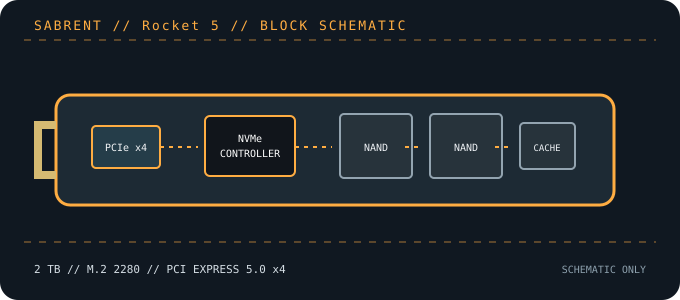

[ PCIE 5.0 NVME DRIVES // IDENTIFIED PRODUCT ]
SABRENT Rocket 5 2 TB (SB-RKT5-2TB)
2 TB M.2 2280 consumer drive with PCIe 5.0 x4 connectivity and a manufacturer-rated 14,000/12,000 MB/s sequential read/write ceiling. The exact retail identifier is SB-RKT5-2TB.

IDENTIFICATION: Confirm the printed model code, capacity, suffix, hardware revision and firmware against the actual drive. Similar family names can denote different heatsinks, controller platforms and performance. Values here identify the cited 2 TB SKU and remain subject to the linked manufacturer documentation.
Manufacturer-identified specifications
| Model / manufacturer code | SABRENT Rocket 5 2 TB (SB-RKT5-2TB) — SB-RKT5-2TB |
|---|---|
| Capacity / physical format | 2 TB; M.2 2280 |
| Interface / lane width | PCI Express 5.0 x4; backward operation depends on host PCIe/NVMe support. |
| Protocol | NVMe command protocol; exact revision and optional features depend on drive firmware and host support. |
| Vendor-rated sequential performance | Up to 14,000 MB/s read / 12,000 MB/s write; peak ratings, not sustained guarantees. |
| Endurance / warranty | Not stated here; verify the current capacity-specific manufacturer documentation; 5-year limited warranty; confirm registration and regional terms |
| Controller / flash | Phison E26 (reported for this model); 3D TLC NAND. Component details can vary by production revision; use the exact drive label and current manufacturer documentation. |
| Cooling / package note | The M.2 module needs effective cooling during sustained Gen5 workloads. Rocket 5 is also sold in heatsink bundles; verify the exact package because the MPN above identifies the SSD. |
Compatibility, installation & service
- Install in a motherboard M.2 M-key socket wired for PCIe x4; full rated link bandwidth requires PCIe 5.0 x4. Gen4/Gen3 hosts remain usable where NVMe and the drive fit are supported, at the negotiated lower link rate.
- M.2 2280 fit alone does not guarantee thermal adequacy. Use a motherboard or compatible aftermarket heatsink with proper pad contact and clearance; avoid stacking cooling assemblies.
- Check the board manual for CPU/chipset lane sharing, disabled SATA ports and boot support before placement. Confirm the product label matches SB-RKT5-2TB, not another Rocket generation or bundle.
- Before replacing a boot drive, create a recoverable backup and confirm OS recovery media, encryption keys and firmware settings. Follow clean shutdown and electrostatic-discharge precautions; do not hot-plug M.2 unless the platform manual explicitly supports it.
Product references
- SABRENT — Rocket 5 2 TB product pageOfficial capacity, interface and vendor-rated performance reference.
- TechPowerUp — Sabrent Rocket 5 2 TB specificationsIndependent product database entry for the 2 TB configuration.
Manufacturer ratings are capacity- and test-condition-specific. Independent tests characterize only the tested sample and workload. Consult current manuals and support portals for revisions, fit, firmware and warranty conditions.